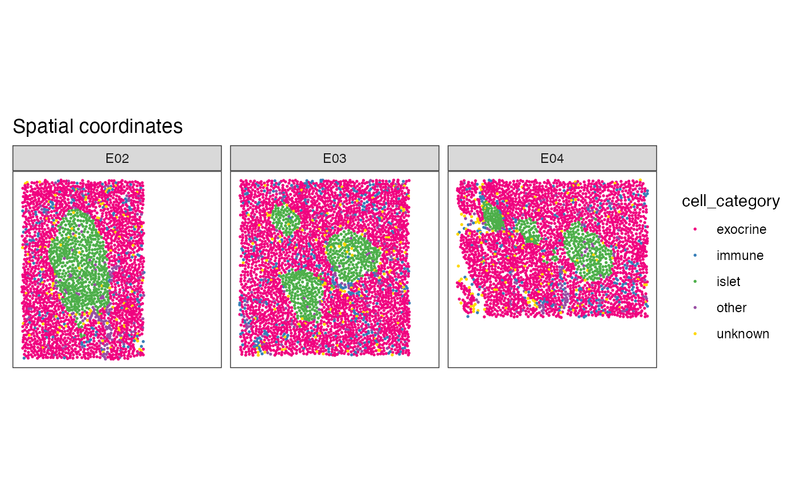
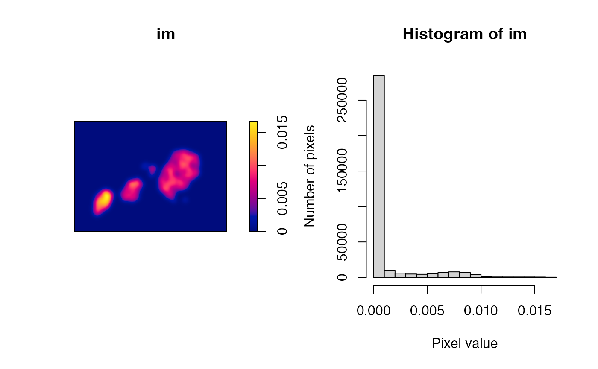

Reconstrucion and analysis of diabetes island from IMC data
Samuel Gunz
Department of Molecular Life Sciences, University of Zurich, SwitzerlandSIB Swiss Institute of Bioinformatics, University of Zurich, Switzerlandsamuel.gunz@uzh.ch
Mark D. Robinson
Department of Molecular Life Sciences, University of Zurich, SwitzerlandSIB Swiss Institute of Bioinformatics, University of Zurich, SwitzerlandSource:
vignettes/IMC_DiabetesIslands_Vignette.Rmd
IMC_DiabetesIslands_Vignette.RmdAbstract
Reconstrucion and analysis of diabetes island from IMC data
using the sosta package
Setup
library("sosta")
library("dplyr")
library("ggplot2")
library("patchwork")
library("ggspavis")
library("spatstat.explore")
#> Warning: package 'spatstat.explore' was built under R version 4.3.3
#> Warning: package 'spatstat.data' was built under R version 4.3.3
#> Warning: package 'spatstat.univar' was built under R version 4.3.3
#> Warning: package 'spatstat.geom' was built under R version 4.3.3
#> Warning: package 'spatstat.random' was built under R version 4.3.3
library("spatstat.geom")
library("imcdatasets")Introduction
In this vignette we will use data from the package imcdatasets. The dataset contains imaging mass cytometry (IMC) data of pancreatic islets human donors at different stages of type 1 diabetes (T1D) [@damondMapHumanType2019].
From the manual of imcdatasets and the original publication by @damondMapHumanType2019 we know that
The three donors in the subset present the following characteristics:
6126 is a non-diabetic donor, with large islets containing many beta cells, severe infiltration of the exocrine pancreas with myeloid cells but limited infiltration of islets.
6414 is a donor with recent T1D onset (shortly after diagnosis) showing partial beta cell destruction and mild infiltration of islets with T cells. 6180 is a donor with long-duration T1D (11 years after diagnosis), showing near-total beta cell destruction and limited immune cell infiltration in both the islets and the pancreas.
# load the data
spe <- imcdatasets::Damond_2019_Pancreas("spe", full_dataset = FALSE)
#> see ?imcdatasets and browseVignettes('imcdatasets') for documentation
#> loading from cache
spe
#> class: SpatialExperiment
#> dim: 38 252059
#> metadata(0):
#> assays(3): counts exprs quant_norm
#> rownames(38): H3 SMA ... DNA1 DNA2
#> rowData names(6): channel metal ... antibody_clone full_name
#> colnames(252059): 138_1 138_2 ... 319_1149 319_1150
#> colData names(27): cell_id image_name ... patient_BMI sample_id
#> reducedDimNames(0):
#> mainExpName: Damond_2019_Pancreas_v1
#> altExpNames(0):
#> spatialCoords names(2) : cell_x cell_y
#> imgData names(0):First we plot the data for illustration. As we have multiple images per patient we will subset one patient and a few slides.
plotSpots(spe[,spe[["patient_id"]] == 6126 &
spe[["image_name"]] %in% c("E02", "E03", "E04")],
annotate = "cell_category",
sample_id = "image_name",
in_tissue = NULL) +
facet_wrap(~ image_name) # Reconstruction of diabetes islets
Reconstruction of diabetes islets for one image
In this example we will reconstruct the density based on the point pattern density of the islet cells. For this we use functions from the package spatstat which is a convenient package for point pattern analysis. We show the workflow for one image, before continuing to all do it for all images.
First we will create a ppp object using
SPE2ppp
# Convert the spe object to a point pattern object
pp <- SPE2ppp(spe, marks = "cell_category", image_col = "image_name", image_id = "E04")
# Extract the islet cells
pp.islet <- subset(pp, marks == "islet")Next we will set the default dimension for the resulting image. A lower resolution speed up computation but lead to less exact reconstruction. We set a default of 500 pixels for the x dimension, the corresponding y dimension gets directly calculated.
# Set the dimensions of the resulting reconstruction
dimyx <- getDimXY(pp.islet, 500)To select the threshold for the reconstruction we look at the density
of one image. The function bw.diggle estimates the bandwith
for the smoothing kernel. The result is a image (m x n matrix with
density values).
# plot the density of the image
im <- density(pp.islet, sigma = bw.diggle(pp.islet), dimyx = dimyx)
par(mfrow = c(1, 2))
plot(im)
hist(im)
From the histogram and the density image we can see that there are a
lot of pixels with 0 density. To set the threshold at 0.0025 to include
as many cells as possible in the estimation of the islets. We then use
the function reconstructShapeDensity to reconstruct the
image. The result is a sf polygon.
Reconstruction of diabetes islets for one image
In this example we will reconstruct the density based on the point pattern density of the islet cells. We will start with a few images to set the necessary parameters.
n <- estimateReconstructionParametersSPE(
spe,
marks = "cell_category",
image_col = "image_name",
mark_select = "islet",
ncores = 5,
plot_hist = TRUE
)
thres <- mean(n$thres)
bndw <- mean(n$bndw)
colData(spe)$image_name |> unique()
shapeIntensityImage(
spe,
marks = "cell_category",
image_col = "image_name",
image_id = "J13",
bndw = bndw,
mark_select = "islet"
)
p2 <- reconstructShapeDensityImage(
spe,
marks = "cell_category",
image_col = "image_name",
image_id = "J13",
mark_select = "islet"
)
spe_sel <- spe[, spe[["image_name"]] %in% c("J13")]
spe_sel_df <- cbind(spatialCoords(spe_sel), colData(spe_sel))
ggplot() +
geom_point(data = spe_sel_df,
aes(x = cell_x, y = cell_y, color = cell_category), size = 0.75) +
theme_light() +
#scale_color_brewer(palette = "Set1") +
geom_sf(data = p2, fill = NA, color = "black")
shapeIntensityImage(
spe,
marks = "cell_category",
image_col = "image_name",
image_id = "E04",
bndw = bndw,
mark_select = "islet"
)From the histogram and the density image we can see that there are a
lot of pixels with 0 density. To set the threshold at 0.004. We then use
the function reconstructShapeDensity to reconstruct the
image. The result is a sf polygon.
islet <- reconstructShapeDensityImage(
spe,
marks = "cell_category",
image_col = "image_name",
image_id = "E04",
mark_select = "islet",
bndw = bndw,
dim = 500,
thres = thres
)We can plot both the points and the estimated islets.
islet <- reconstructShapeDensityImage(
spe,
marks = "cell_category",
image_col = "image_name",
image_id = "E04",
mark_select = "islet"
)
# Cannot easily add geom_df to plotSpots, therefore custom function here...
spe_sel <- spe[, spe[["image_name"]] %in% c("E04")]
spe_sel_df <- cbind(spatialCoords(spe_sel), colData(spe_sel))
ggplot() +
geom_point(data = spe_sel_df,
aes(x = cell_x, y = cell_y, color = cell_category), size = 0.75) +
theme_light() +
#scale_color_brewer(palette = "Set1") +
geom_sf(data = islet, fill = NA, color = "black")Reconstruction of diabetes islets for all images
all_islets <- reconstructShapeDensitySPE(spe, marks = "cell_category",
image_col = "image_name",
mark_select = "islet",
bndw = sigma,
thres = 0.0025,
ncores = 4)
sessionInfo()
#> R version 4.3.1 (2023-06-16)
#> Platform: aarch64-apple-darwin20 (64-bit)
#> Running under: macOS Sonoma 14.5
#>
#> Matrix products: default
#> BLAS: /Library/Frameworks/R.framework/Versions/4.3-arm64/Resources/lib/libRblas.0.dylib
#> LAPACK: /Library/Frameworks/R.framework/Versions/4.3-arm64/Resources/lib/libRlapack.dylib; LAPACK version 3.11.0
#>
#> locale:
#> [1] en_US.UTF-8/en_US.UTF-8/en_US.UTF-8/C/en_US.UTF-8/en_US.UTF-8
#>
#> time zone: Europe/Zurich
#> tzcode source: internal
#>
#> attached base packages:
#> [1] stats4 stats graphics grDevices utils datasets methods
#> [8] base
#>
#> other attached packages:
#> [1] imcdatasets_1.8.0 cytomapper_1.12.0
#> [3] EBImage_4.42.0 SpatialExperiment_1.10.0
#> [5] SingleCellExperiment_1.22.0 SummarizedExperiment_1.30.2
#> [7] Biobase_2.60.0 GenomicRanges_1.52.1
#> [9] GenomeInfoDb_1.36.4 IRanges_2.34.1
#> [11] S4Vectors_0.38.2 BiocGenerics_0.46.0
#> [13] MatrixGenerics_1.12.3 matrixStats_1.3.0
#> [15] spatstat.explore_3.3-1 nlme_3.1-162
#> [17] spatstat.random_3.3-1 spatstat.geom_3.3-2
#> [19] spatstat.univar_3.0-0 spatstat.data_3.1-2
#> [21] ggspavis_1.6.0 patchwork_1.2.0
#> [23] ggplot2_3.5.1 dplyr_1.1.4
#> [25] sosta_0.0.0.9000 BiocStyle_2.28.1
#>
#> loaded via a namespace (and not attached):
#> [1] later_1.3.2 bitops_1.0-8
#> [3] filelock_1.0.3 tibble_3.2.1
#> [5] R.oo_1.26.0 svgPanZoom_0.3.4
#> [7] polyclip_1.10-7 lifecycle_1.0.4
#> [9] sf_1.0-16 edgeR_3.42.4
#> [11] lattice_0.21-8 magrittr_2.0.3
#> [13] limma_3.56.2 sass_0.4.9
#> [15] rmarkdown_2.27 jquerylib_0.1.4
#> [17] yaml_2.3.10 httpuv_1.6.15
#> [19] ggside_0.3.1 sp_2.1-4
#> [21] spatstat.sparse_3.1-0 DBI_1.2.3
#> [23] RColorBrewer_1.1-3 abind_1.4-5
#> [25] zlibbioc_1.46.0 purrr_1.0.2
#> [27] R.utils_2.12.3 RCurl_1.98-1.16
#> [29] rappdirs_0.3.3 GenomeInfoDbData_1.2.10
#> [31] spatstat.utils_3.0-5 terra_1.7-78
#> [33] units_0.8-5 goftest_1.2-3
#> [35] dqrng_0.4.1 pkgdown_2.0.9
#> [37] svglite_2.1.3 DelayedMatrixStats_1.22.6
#> [39] codetools_0.2-19 DropletUtils_1.20.0
#> [41] DelayedArray_0.26.7 scuttle_1.10.3
#> [43] tidyselect_1.2.1 raster_3.6-26
#> [45] farver_2.1.2 viridis_0.6.5
#> [47] BiocFileCache_2.11.1 jsonlite_1.8.8
#> [49] BiocNeighbors_1.18.0 e1071_1.7-14
#> [51] systemfonts_1.1.0 tools_4.3.1
#> [53] ragg_1.3.2 Rcpp_1.0.13
#> [55] glue_1.7.0 gridExtra_2.3
#> [57] xfun_0.46 HDF5Array_1.28.1
#> [59] shinydashboard_0.7.2 withr_3.0.1
#> [61] BiocManager_1.30.23 fastmap_1.2.0
#> [63] boot_1.3-28.1 rhdf5filters_1.12.1
#> [65] fansi_1.0.6 spData_2.3.1
#> [67] digest_0.6.36 R6_2.5.1
#> [69] mime_0.12 textshaping_0.4.0
#> [71] colorspace_2.1-1 wk_0.9.2
#> [73] tensor_1.5 jpeg_0.1-10
#> [75] RSQLite_2.3.7 R.methodsS3_1.8.2
#> [77] utf8_1.2.4 generics_0.1.3
#> [79] class_7.3-22 httr_1.4.7
#> [81] htmlwidgets_1.6.4 S4Arrays_1.2.1
#> [83] spdep_1.3-5 pkgconfig_2.0.3
#> [85] gtable_0.3.5 blob_1.2.4
#> [87] XVector_0.40.0 htmltools_0.5.8.1
#> [89] bookdown_0.40 fftwtools_0.9-11
#> [91] scales_1.3.0 png_0.1-8
#> [93] knitr_1.48 rstudioapi_0.16.0
#> [95] rjson_0.2.21 curl_5.2.1
#> [97] proxy_0.4-27 cachem_1.1.0
#> [99] rhdf5_2.44.0 BiocVersion_3.17.1
#> [101] KernSmooth_2.23-21 parallel_4.3.1
#> [103] vipor_0.4.7 AnnotationDbi_1.62.2
#> [105] desc_1.4.3 s2_1.1.7
#> [107] pillar_1.9.0 grid_4.3.1
#> [109] SpatialFeatureExperiment_1.2.3 vctrs_0.6.5
#> [111] promises_1.3.0 dbplyr_2.5.0
#> [113] beachmat_2.16.0 xtable_1.8-4
#> [115] beeswarm_0.4.0 evaluate_0.24.0
#> [117] magick_2.8.4 cli_3.6.3
#> [119] locfit_1.5-9.10 compiler_4.3.1
#> [121] rlang_1.1.4 crayon_1.5.3
#> [123] labeling_0.4.3 classInt_0.4-10
#> [125] fs_1.6.4 ggbeeswarm_0.7.2
#> [127] viridisLite_0.4.2 deldir_2.0-4
#> [129] BiocParallel_1.34.2 nnls_1.5
#> [131] Biostrings_2.68.1 munsell_0.5.1
#> [133] tiff_0.1-12 Matrix_1.6-5
#> [135] ExperimentHub_2.8.1 sparseMatrixStats_1.12.2
#> [137] bit64_4.0.5 Rhdf5lib_1.22.1
#> [139] KEGGREST_1.40.1 shiny_1.9.1
#> [141] highr_0.11 interactiveDisplayBase_1.38.0
#> [143] AnnotationHub_3.8.0 memoise_2.0.1
#> [145] bslib_0.8.0 bit_4.0.5